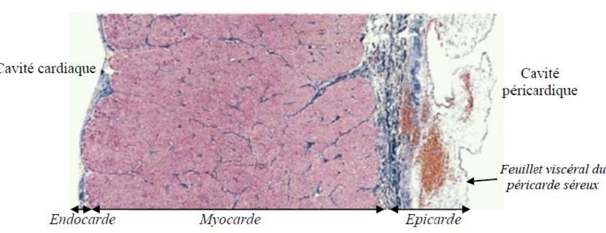

Coeur
I Histologie-Anatomie-Physiologie
1 Enveloppe

De l’extérieur vers l’intérieur :
- Péricarde : péricarde fibreux (collagène +++) + péricarde séreux composé d’un feuillet pariétal externe et d’un feuillet viscéral interne.
(= épicarde, constitué d’un épithélium de revêtement et d’un TC contenant les artères et veines coronaires et les fibres nerveuses sympathiques et parasympathiques modulant l’activité myocardique) - Myocarde : tissu musculaire (cardiomyocytes) + trame conjonctive (vascularisation via vaisseaux sanguins issus des coronaires)
- Endocarde : TC comprenant quelques fibres musculaires lisses et le réseau de Purkinje + endothélium (= épithélium de revêtement, en contact avec le sang).
- 3 types de cardiomyocytes
- Cellules contractiles (99% des cellules, mitochondries +++ => métabolisme oxydatif prédominant => sensibilité +++ à l’hypoxie) => circulation du sang
- Cellules cardionectrices (pauvres en myofibrilles, auto-dépolarisable) => constituent le tissu nodal (= les cellules se regroupent en « nœuds ») qui fixe le rythme cardiaque (initiation et conduction de l’excitation)
- Cellules endocrines (pauvres en myofibrilles, sécrétoire) => sécrétion d’une hormone, le Facteur Natriurétique Atrial
- Épaisseur du myocarde différente :
- Myocarde fin au niveau des oreillettes
- Myocarde épais au niveau des ventricules et surtout le ventricule gauche (car éjection jusqu’aux organes périphériques = plus de travail à fournir que le VD => pression aorte > pression artère pulmonaire)
2 Valves

Structures élastiques, non musculaires, sans innervation ni irrigation sanguine => séparent les différentes cavités et empêchent le sang de refluer dans le mauvais sens (= circulation à sens unique)
| Valves Auriculo-Ventriculaire | Valves Sigmoïdes |
|
|
3 Vascularisation
II Circulation Sanguine
III Rythme Cardiaque et Tissu Sinusal
IV ECG
Vaissaux
I Artères
II Veines
III Circulation Lymphatique
Débit Sanguin et Pression Arterielle
I Débit Sanguin
II Débit Cardiaque
III Fréquence Cardiaque
IV Pression Arterielle
V Régulation
1 Hormonale
4 à mettre: Adrenaline + ADH + SRAA + PNA